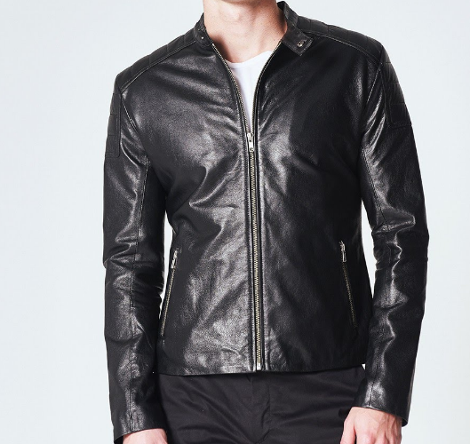
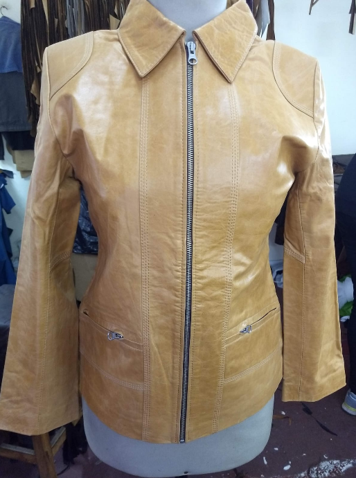
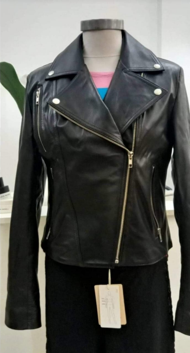

Orion
Campera de cuero genuino modelo masculino de diseño atemporal, con cierre centrado y dos bolsillos.
Talles: S - M - L - XL
Ver ProductoCamperas de cuero hechas en Buenos Aires, con materiales auténticos y diseño atemporal.
Ver colecciónANNA es una marca nacida del trabajo y la memoria.
Desde un taller familiar en el centro de Buenos Aires, hacemos camperas de cuero con una idea simple: que perduren en el tiempo.
Creemos en el oficio, en los procesos reales y en el respeto por los materiales auténticos.
Cada prenda lleva horas de trabajo, decisiones cuidadas y una forma de hacer que se transmite de generación en generación.

Campera de cuero genuino modelo masculino de diseño atemporal, con cierre centrado y dos bolsillos.
Talles: S - M - L - XL
Ver Producto
Campera de cuero genuino modelo femenino de diseño atemporal, con cuello en v, cierre centrado y dos bolsillos.
Talles: S - M - L - XL
Ver Producto
Campera de cuero genuino modelo femenino de diseño atemporal, con cierre cruzado y tres bolsillos.
Talles: S - M - L - XL
Ver ProductoTrabajamos el cuero respetando sus tiempos y su carácter. Elegimos materiales durables y procesos que priorizan la calidad por sobre la producción masiva.
Una campera de cuero bien hecha no es una tendencia: es una prenda que acompaña durante años.
Para consultas o compras: